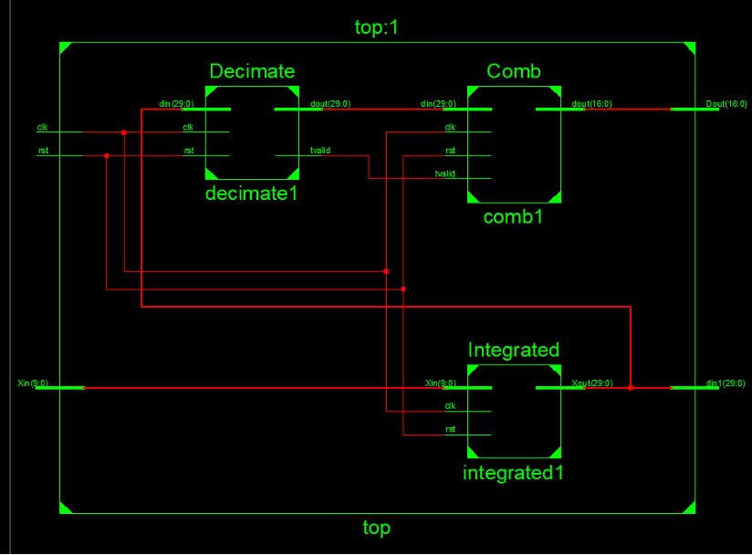
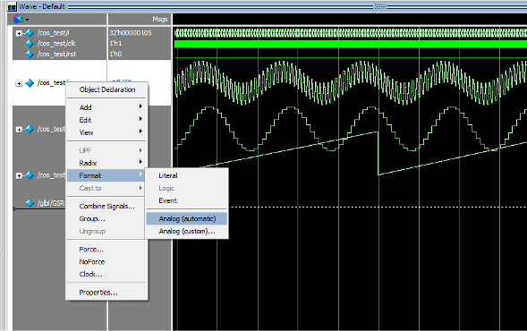

数字电路实验（三） FPGA应用实例之梳状滤波器
实验目的
- 了解Sigma-delta调制器的相关知识，结合课上所学知识对模拟信号和数字信号有进一步理解；
- 利用FPGA实现梳状滤波器，通过观察仿真结果理解梳状滤波器的原理；
- 实例化FFT（快速傅里叶变换） IP核，对频域信号处理有所了解。
预习材料
- ADC（模数转换器）的概念：单片机外围模块漫谈之一，图解说明什么是Flash, SAR, Sigma-Delta型ADC - 知乎 (zhihu.com)
- 梳状滤波器结构设计：FPGA数字信号处理（十六）单级CIC滤波器Verilog设计-CSDN博客 FPGA数字信号处理（十六）单级CIC滤波器Verilog设计-CSDN博客
实验器材
Basys 2开发板，笔记本电脑1台（提前安装Xilinx ISE 14.7）。实验步骤
- 建立顶层top模块并实例化Integrated,Decimate,Comb三个模块；
 各模块间关系 - 用滤波器模块处理信号。
 ModelSim仿真软件中滤波前后信号波形